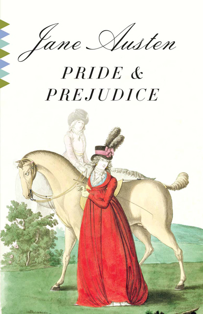

Pride and Prejudice (1813)
Synopsis
Pride and Prejudice is a novel of manners by Jane Austen, first published in 1813. The story follows the main character, Elizabeth Bennet, as she deals with issues of manners, upbringing, morality, education, and marriage in the society of the landed gentry of the British Regency. Elizabeth is the second of five daughters of a country gentleman living near the fictional town of Meryton in Hertfordshire, near London. Page 2 of a letter from Jane Austen to her sister Cassandra (11 June 1799) in which she first mentions Pride and Prejudice, using its working title First Impressions. Set in England in the early 19th century, Pride and Prejudice tells the story of Mr and Mrs Bennet's five unmarried daughters after the rich and eligible Mr Bingley and his status-conscious friend, Mr Darcy, have moved into their neighbourhood. While Bingley takes an immediate liking to the eldest Bennet daughter, Jane, Darcy has difficulty adapting to local society and repeatedly clashes with the second-eldest Bennet daughter, Elizabeth. Though Austen set the story at the turn of the 19th century, it retains a fascination for modern readers, continuing near the top of lists of "most loved books." It has become one of the most popular novels in English literature, selling over 20 million copies, and receives considerable attention from literary scholars. Modern interest in the book has resulted in a number of dramatic adaptations and an abundance of novels and stories imitating Austen's memorable characters or themes.
Download PDF